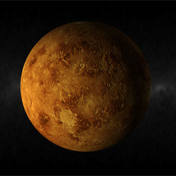
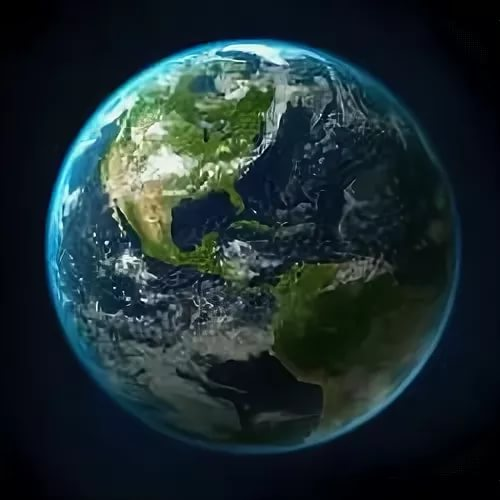

Солнце — одна из звёзд нашей Галактики (Млечный Путь) и единственная звезда Солнечной системы. Вокруг Солнца обращаются другие объекты этой системы: планеты и их спутники, карликовые планеты и их спутники, астероиды, метеороиды, кометы и космическая пыль.
Мeркурий — ближайшая к Солнцу планета Солнечной системы, наименьшая из планет земной группы. Названа в честь древнеримского бога торговли — быстрого Меркурия, поскольку она движется по небу быстрее других планет. Период обращения вокруг Солнца занимает всего 87,97 дней, самый короткий из всех планет Солнечной системы.

Венера — вторая по удалённости от Солнца планета Солнечной системы, наряду с Меркурием, Землёй и Марсом принадлежащая к семейству планет земной группы. Названа в честь древнеримской богини любви Венеры. По ряду характеристик — например, по массе и размерам — Венера считается «сестрой» Земли. Венерианский год составляет 224,7 земных суток. Она имеет самый длинный период вращения вокруг своей оси (около 243 земных суток, в среднем 243,0212 ± 0,00006 сут) среди всех планет Солнечной системы и вращается в направлении, противоположном направлению вращения большинства планет.

Земля — третья по удалённости от Солнца планета Солнечной системы. Самая плотная, пятая по диаметру и массе среди всех планет и крупнейшая среди планет земной группы, в которую входят также Меркурий, Венера и Марс. Единственное известное человеку на данный момент тело Солнечной системы в частности и Вселенной вообще, населённое живыми организмами.
Марс — четвёртая по удалённости от Солнца планета земной группы с разреженной атмосферой (давление у поверхности в 160 раз меньше земного). Особенностями поверхностного рельефа Марса можно считать ударные кратеры наподобие лунных, а также вулканы, долины, пустыни и полярные ледниковые шапки наподобие земных.
Юпитер — крупнейшая планета Солнечной системы, пятая по удалённости от Солнца. Наряду с Сатурном, Ураном и Нептуном, Юпитер классифицируется как газовый гигант.
Планета была известна людям с глубокой древности, что нашло своё отражение в мифологии и религиозных верованиях различных культур: месопотамской, вавилонской, греческой и других. Современное название Юпитера происходит от имени древнеримского верховного бога-громовержца
Сатурн — шестая планета от Солнца и вторая по размерам планета в Солнечной системе после Юпитера. Сатурн, а также Юпитер, Уран и Нептун, классифицируются как планеты-гиганты. Сатурн назван в честь римского бога земледелия. Сатурн обладает заметной системой колец, состоящей главным образом из частичек льда, меньшего количества тяжёлых элементов и пыли.
Уран — планета Солнечной системы, седьмая по удалённости от Солнца, третья по диаметру и четвёртая по массе. Была открыта в 1781 году английским астрономом Уильямом Гершелем и названа в честь греческого бога неба Урана.Уран стал первой планетой, обнаруженной в Новое время и при помощи телескопа. Его открыл Уильям Гершель 13 марта 1781 года, тем самым впервые со времён античности расширив границы Солнечной системы в глазах человека. Несмотря на то, что порой Уран различим невооружённым глазом, более ранние наблюдатели принимали его за тусклую звезду.
Нептун — восьмая и самая дальняя от Земли планета Солнечной системы. По диаметру находится на четвёртом месте, а по массе — на третьем. Масса Нептуна в 17,2 раза, а диаметр экватора в 3,9 раза больше земных. Планета была названа в честь римского бога морей.
 Солнце — одна из звёзд нашей Галактики (Млечный Путь) и единственная звезда Солнечной системы. Вокруг Солнца обращаются другие объекты этой системы: планеты и их спутники, карликовые планеты и их спутники, астероиды, метеороиды, кометы и космическая пыль.
Солнце — одна из звёзд нашей Галактики (Млечный Путь) и единственная звезда Солнечной системы. Вокруг Солнца обращаются другие объекты этой системы: планеты и их спутники, карликовые планеты и их спутники, астероиды, метеороиды, кометы и космическая пыль.  Мeркурий — ближайшая к Солнцу планета Солнечной системы, наименьшая из планет земной группы. Названа в честь древнеримского бога торговли — быстрого Меркурия, поскольку она движется по небу быстрее других планет. Период обращения вокруг Солнца занимает всего 87,97 дней, самый короткий из всех планет Солнечной системы.
Мeркурий — ближайшая к Солнцу планета Солнечной системы, наименьшая из планет земной группы. Названа в честь древнеримского бога торговли — быстрого Меркурия, поскольку она движется по небу быстрее других планет. Период обращения вокруг Солнца занимает всего 87,97 дней, самый короткий из всех планет Солнечной системы.  Марс — четвёртая по удалённости от Солнца планета земной группы с разреженной атмосферой (давление у поверхности в 160 раз меньше земного). Особенностями поверхностного рельефа Марса можно считать ударные кратеры наподобие лунных, а также вулканы, долины, пустыни и полярные ледниковые шапки наподобие земных.
Марс — четвёртая по удалённости от Солнца планета земной группы с разреженной атмосферой (давление у поверхности в 160 раз меньше земного). Особенностями поверхностного рельефа Марса можно считать ударные кратеры наподобие лунных, а также вулканы, долины, пустыни и полярные ледниковые шапки наподобие земных. Юпитер — крупнейшая планета Солнечной системы, пятая по удалённости от Солнца. Наряду с Сатурном, Ураном и Нептуном, Юпитер классифицируется как газовый гигант.
Планета была известна людям с глубокой древности, что нашло своё отражение в мифологии и религиозных верованиях различных культур: месопотамской, вавилонской, греческой и других. Современное название Юпитера происходит от имени древнеримского верховного бога-громовержца
Юпитер — крупнейшая планета Солнечной системы, пятая по удалённости от Солнца. Наряду с Сатурном, Ураном и Нептуном, Юпитер классифицируется как газовый гигант.
Планета была известна людям с глубокой древности, что нашло своё отражение в мифологии и религиозных верованиях различных культур: месопотамской, вавилонской, греческой и других. Современное название Юпитера происходит от имени древнеримского верховного бога-громовержца Сатурн — шестая планета от Солнца и вторая по размерам планета в Солнечной системе после Юпитера. Сатурн, а также Юпитер, Уран и Нептун, классифицируются как планеты-гиганты. Сатурн назван в честь римского бога земледелия. Сатурн обладает заметной системой колец, состоящей главным образом из частичек льда, меньшего количества тяжёлых элементов и пыли.
Сатурн — шестая планета от Солнца и вторая по размерам планета в Солнечной системе после Юпитера. Сатурн, а также Юпитер, Уран и Нептун, классифицируются как планеты-гиганты. Сатурн назван в честь римского бога земледелия. Сатурн обладает заметной системой колец, состоящей главным образом из частичек льда, меньшего количества тяжёлых элементов и пыли. Уран — планета Солнечной системы, седьмая по удалённости от Солнца, третья по диаметру и четвёртая по массе. Была открыта в 1781 году английским астрономом Уильямом Гершелем и названа в честь греческого бога неба Урана.Уран стал первой планетой, обнаруженной в Новое время и при помощи телескопа. Его открыл Уильям Гершель 13 марта 1781 года, тем самым впервые со времён античности расширив границы Солнечной системы в глазах человека. Несмотря на то, что порой Уран различим невооружённым глазом, более ранние наблюдатели принимали его за тусклую звезду.
Уран — планета Солнечной системы, седьмая по удалённости от Солнца, третья по диаметру и четвёртая по массе. Была открыта в 1781 году английским астрономом Уильямом Гершелем и названа в честь греческого бога неба Урана.Уран стал первой планетой, обнаруженной в Новое время и при помощи телескопа. Его открыл Уильям Гершель 13 марта 1781 года, тем самым впервые со времён античности расширив границы Солнечной системы в глазах человека. Несмотря на то, что порой Уран различим невооружённым глазом, более ранние наблюдатели принимали его за тусклую звезду.  Нептун — восьмая и самая дальняя от Земли планета Солнечной системы. По диаметру находится на четвёртом месте, а по массе — на третьем. Масса Нептуна в 17,2 раза, а диаметр экватора в 3,9 раза больше земных. Планета была названа в честь римского бога морей.
Нептун — восьмая и самая дальняя от Земли планета Солнечной системы. По диаметру находится на четвёртом месте, а по массе — на третьем. Масса Нептуна в 17,2 раза, а диаметр экватора в 3,9 раза больше земных. Планета была названа в честь римского бога морей.